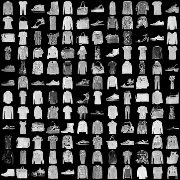
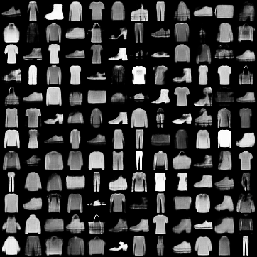
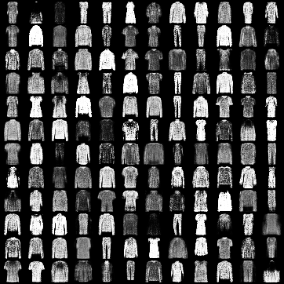
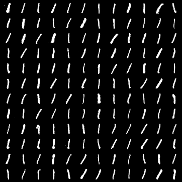
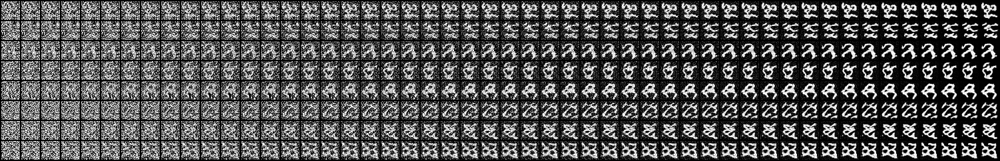
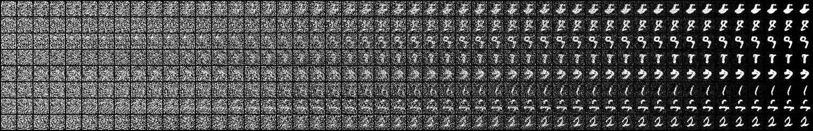
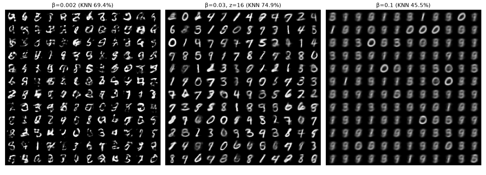

Three ways to draw a T-shirt
I trained a VAE, a GAN and a diffusion model on the same 60,000 small clothing images, tuned each one, then asked them all for new clothes. They were scored by FID on 2,000 samples each, where lower means closer to real images.

The sharpest and the most varied. You can see prints, sandal straps and bag handles.

Every class shows up, but everything looks soft, as if it had been ironed flat.

Higher contrast, but speckled. It never drew a single shoe or bag.
Each grid is 144 random samples from the best version of that model.
The GAN that only drew ones

On handwritten digits, one GAN setting produced a sharp, realistic “1” every time. A digit classifier read all 2,000 of 2,000 samples as a 1.
The same network at a lower learning rate and half the training still drew all ten digits, so the collapse came from training longer and harder. Once the generator finds something that reliably fools the discriminator, it moves everything there. The loss only asks “does this one look real?”, never “did you cover everything?”.
The clothing GAN shows a milder version of the same problem. Across all ten settings I tried, it never learned shoes or bags.
Diffusion has to start from pure noise
A diffusion model learns to undo noise one small step at a time. With the default schedule (100 steps), about 60% of the original image is still there at the last step. The model never practised on pure static, but sampling starts from pure static, so it produced strokes that weren’t digits.

Any schedule that reaches pure noise fixed this. I used 200 steps with a stronger final noise level, the cheapest of the ones that worked, since sampling time grows with the number of steps.

A VAE’s β is a dial between sharp and organised

β sets how hard the VAE is pushed to keep its internal codes tidy. Too little and the strokes are crisp but scrambled, because random codes fall into gaps the decoder never saw. Too much and the samples collapse into the same few blurry digits. The middle setting gave the most readable samples and the best codes for telling digits apart from ten examples each (74.9%).
Even so, the best VAE for drawing clothes and the best VAE for recognising digits turned out to be different models.
How far tuning moved each model
- VAE: switching the pixel loss from squared error to absolute error gave the biggest jump, mostly by adding contrast. A wider network did the rest.
- GAN: LeakyReLU, a higher learning rate and longer training each helped a little. A bigger network or noise vector barely mattered.
- Diffusion: mostly more epochs, at a gentle learning rate.
Is FID fair to these models?
Mostly. It agreed with my eyes, and it rose when a model dropped classes. But it judges 28×28 grayscale clothes with features from a network trained on colour photos, it likes contrast, and it rolls sharpness and variety into one number. The VAE gained a lot just by getting punchier. These scores are only comparable to each other, measured the same way on 2,000 samples.